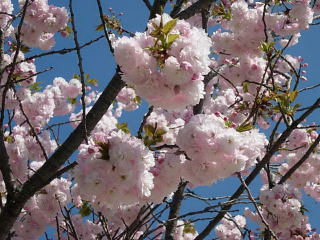

旧出雲市体育館
島根県出雲市今市町北本町3丁目1番地の6
2009/04/11 旧出雲市体育館の八重桜が見頃。
旧出雲市体育館の横にある公園の八重桜が満開で綺麗でした

八重桜はこれ1本だけなんですが、1本ぽつんっとあるので特別目立ってました。
旧体育館のソメイヨシノは花がだいぶ終わってて、葉が多くなっていました。
島根県出雲市今市町北本町3丁目1番地の6
旧出雲市体育館の横にある公園の八重桜が満開で綺麗でした

八重桜はこれ1本だけなんですが、1本ぽつんっとあるので特別目立ってました。
旧体育館のソメイヨシノは花がだいぶ終わってて、葉が多くなっていました。